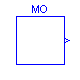
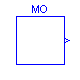


 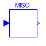
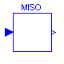
 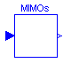
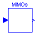


 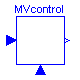
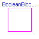
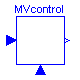
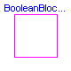
 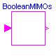
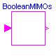
 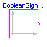
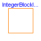
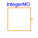
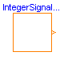
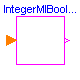
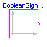
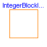
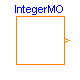
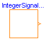
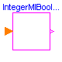


 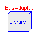
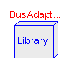
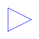
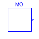
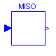
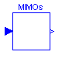
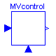
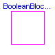
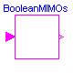
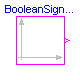
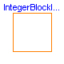
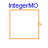
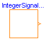
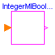
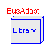
This package contains interface definitions for continuous input/output blocks. In particular it contains the following connector classes:
InPort Connector with input signals of type Real. OutPort Connector with output signals of type Real. BooleanInPort Connector with input signals of type Boolean. BooleanOutPort Connector with output signals of type Boolean. IntegerInPort Connector with input signals of type Integer. IntegerOutPort Connector with output signals of type Integer. RealPort Connector with input/output signals of type Real. BooleanPort Connector with input/output signals of type Real. IntegerPort Connector with input/output signals of type Real.
The following partial block classes are provided to model continuous control blocks:
BlockIcon Basic graphical layout of continuous block
SO Single Output continuous control block
MO Multiple Output continuous control block
SISO Single Input Single Output continuous control block
SI2SO 2 Single Input / 1 Single Output continuous control block
SIMO Single Input Multiple Output continuous control block
MISO Multiple Input Single Output continuous control block
MIMO Multiple Input Multiple Output continuous control block
MIMOs Multiple Input Multiple Output continuous control block
with same number of inputs and outputs
MI2MO 2 Multiple Input / Multiple Output continuous
control block
SignalSource Base class for continuous signal sources
SVcontrol Single-Variable continuous controller
MVcontrol Multi-Variable continuous controller
The following partial block classes are provided to model Boolean control blocks:
BooleanBlockIcon Basic graphical layout of Boolean block
BooleanSISO Single Input Single Output control block
with signals of type Boolean
BooleanMIMOs Multiple Input Multiple Output control block
with same number of inputs and outputs
MI2BooleanMOs 2 Multiple Input / Boolean Multiple Output
block with same signal lengths
BooleanSignalSource Base class for Boolean signal sources
IntegerMIBooleanMOs Multiple Integer Input Multiple Boolean Output control block
with same number of inputs and outputs
The following partial block classes are provided to model Integer control blocks:
IntegerBlockIcon Basic graphical layout of Integer block IntegerMO Multiple Output control block IntegerSignalSource Base class for Integer signal sources
In addition, a subpackage BusAdaptors is temporarily provided in order to make a signal bus concept available. It will be removed, when the package Block is revised exploiting new Modelica features.
Release Notes:
Copyright © 1999-2002, Modelica Association and DLR.
The Modelica package is free software; it can be redistributed and/or modified under the terms of the Modelica license, see the license conditions and the accompanying disclaimer in the documentation of package Modelica in file "Modelica/package.mo".

Block has a continuous input and a continuous output signal vector where the signal sizes of the input and output vector are identical.
| Name | Default | Description |
|---|---|---|
| n | 1 | Number of inputs (= number of outputs) |
partial block MIMOs "Multiple Input Multiple Output continuous control block with same number of inputs and outputs" extends BlockIcon; parameter Integer n=1 "Number of inputs (= number of outputs)"; InPort inPort(final n=n) "Connector of Real input signals"; OutPort outPort(final n=n) "Connector of Real output signals"; output Real y[n] "Output signals"; protected Real u[:]=inPort.signal "Input signals"; equation y = outPort.signal; end MIMOs;
Modelica.Blocks.Interfaces.SISO

partial block SISO "Single Input Single Output continuous control block" extends BlockIcon; InPort inPort(final n=1) "Connector of Real input signal"; OutPort outPort(final n=1) "Connector of Real output signal"; output Real y; protected Real u=inPort.signal[1]; equation y = outPort.signal[1]; end SISO;
Modelica.Blocks.Interfaces.SVcontrol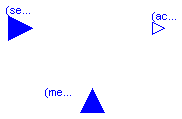
partial block SVcontrol "Single-Variable continuous controller" extends BlockIcon; protected Real u_s "Scalar setpoint input signal"; Real u_m "Scalar measurement input signal"; public InPort inPort_s(final n=1) "Connector of setpoint input signal"; InPort inPort_m(final n=1) "Connector of measurement input signal"; OutPort outPort(final n=1) "Connector of actuator output signal"; output Real y "Scalar actuator output signal"; equation u_s = inPort_s.signal[1]; u_m = inPort_m.signal[1]; y = outPort.signal[1]; end SVcontrol;
Modelica.Blocks.Interfaces.MIMO

Block has a continuous input and a continuous output signal vector. The signal sizes of the input and output vector may be different.
| Name | Default | Description |
|---|---|---|
| nin | 1 | Number of inputs |
| nout | 1 | Number of outputs |
partial block MIMO "Multiple Input Multiple Output continuous control block" extends BlockIcon; parameter Integer nin=1 "Number of inputs"; parameter Integer nout=1 "Number of outputs"; InPort inPort(final n=nin) "Connector of Real input signals"; OutPort outPort(final n=nout) "Connector of Real output signals"; output Real y[nout] "Output signals"; protected Real u[:]=inPort.signal "Input signals"; equation y = outPort.signal; end MIMO;
Modelica.Blocks.Interfaces.RealPort
| Name | Default | Description |
|---|---|---|
| replaceable type SignalType | Real |
connector RealPort "Real port (both input/output possible)" replaceable type SignalType = Real; extends SignalType; end RealPort;
Modelica.Blocks.Interfaces.IntegerPort
connector IntegerPort = Integer "Integer port (both input/output possible)";
Modelica.Blocks.Interfaces.BooleanPort
connector BooleanPort = Boolean "Boolean port (both input/output possible)";
| Name | Default | Description |
|---|---|---|
| n | 1 | Dimension of signal vector |
| replaceable type SignalType | Real | type of signal |
connector InPort "Connector with input signals of type Real" parameter Integer n=1 "Dimension of signal vector"; replaceable type SignalType = Real "type of signal"; input SignalType signal[n] "Real input signals"; end InPort;
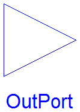
| Name | Default | Description |
|---|---|---|
| n | 1 | Dimension of signal vector |
| replaceable type SignalType | Real | type of signal |
connector OutPort "Connector with output signals of type Real" parameter Integer n=1 "Dimension of signal vector"; replaceable type SignalType = Real "type of signal"; output SignalType signal[n] "Real output signals"; end OutPort;
Modelica.Blocks.Interfaces.BooleanInPort
| Name | Default | Description |
|---|---|---|
| n | 1 | Dimension of signal vector |
connector BooleanInPort "Connector with input signals of type Boolean" parameter Integer n=1 "Dimension of signal vector"; input Boolean signal[n] "Boolean input signals"; end BooleanInPort;
Modelica.Blocks.Interfaces.BooleanOutPort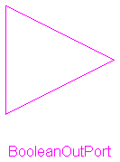
| Name | Default | Description |
|---|---|---|
| n | 1 | Dimension of signal vector |
connector BooleanOutPort "Connector with output signals of type Boolean" parameter Integer n=1 "Dimension of signal vector"; output Boolean signal[n] "Boolean output signals"; end BooleanOutPort;
Modelica.Blocks.Interfaces.IntegerInPort
| Name | Default | Description |
|---|---|---|
| n | 1 | Dimension of signal vector |
connector IntegerInPort "Connector with input signals of type Integer" parameter Integer n=1 "Dimension of signal vector"; input Integer signal[n] "Integer input signals"; end IntegerInPort;
Modelica.Blocks.Interfaces.IntegerOutPort
| Name | Default | Description |
|---|---|---|
| n | 1 | Dimension of signal vector |
connector IntegerOutPort "Connector with output signals of type Integer" parameter Integer n=1 "Dimension of signal vector"; output Integer signal[n] "Integer output signals"; end IntegerOutPort;
Modelica.Blocks.Interfaces.BlockIcon
partial block BlockIcon "Basic graphical layout of continuous block" end BlockIcon;
Modelica.Blocks.Interfaces.SO

partial block SO "Single Output continuous control block" extends BlockIcon; OutPort outPort(final n=1) "Connector of Real output signal"; output Real y; equation y = outPort.signal[1]; end SO;
| Name | Default | Description |
|---|---|---|
| nout | 1 | Number of outputs |
partial block MO "Multiple Output continuous control block" extends BlockIcon; parameter Integer nout(min=1) = 1 "Number of outputs"; OutPort outPort(final n=nout) "Connector of Real output signals"; output Real y[nout]; equation y = outPort.signal; end MO;
Modelica.Blocks.Interfaces.SI2SO

Block has two Input vectors inPort1.signal and inPort2.signal and one output vector outPort.signal. All vectors have one element.
partial block SI2SO "2 Single Input / 1 Single Output continuous control block" extends BlockIcon; InPort inPort1(final n=1) "Connector of Real input signal 1"; InPort inPort2(final n=1) "Connector of Real input signal 2"; OutPort outPort(final n=1) "Connector of Real output signal"; output Real y "Output signal"; protected Real u1=inPort1.signal[1] "Input signal 1"; Real u2=inPort2.signal[1] "Input signal 2"; equation y = outPort.signal[1]; end SI2SO;
Modelica.Blocks.Interfaces.SIMO

Block has one continuous input signal and a vector of continuous output signals.
| Name | Default | Description |
|---|---|---|
| nout | 1 | Number of outputs |
partial block SIMO "Single Input Multiple Output continuous control block" extends BlockIcon; parameter Integer nout=1 "Number of outputs"; InPort inPort(final n=1) "Connector of Real input signal"; OutPort outPort(final n=nout) "Connector of Real output signals"; output Real y[nout] "Output signals"; protected Real u=inPort.signal[1] "Input signal"; equation y = outPort.signal; end SIMO;

Block has a vector of continuous input signals and one continuous output signal.
| Name | Default | Description |
|---|---|---|
| nin | 1 | Number of inputs |
partial block MISO "Multiple Input Single Output continuous control block" extends BlockIcon; parameter Integer nin=1 "Number of inputs"; InPort inPort(final n=nin) "Connector of Real input signals"; OutPort outPort(final n=1) "Connector of Real output signal"; output Real y "Output signal"; protected Real u[:]=inPort.signal "Input signals"; equation y = outPort.signal[1]; end MISO;
Modelica.Blocks.Interfaces.MI2MO

Block has two Input vectors inPort1.signal and inPort2.signal and one output vector outPort.signal. All vectors have the same number of elements.
| Name | Default | Description |
|---|---|---|
| n | 1 | Dimension of input and output vectors. |
partial block MI2MO "2 Multiple Input / Multiple Output continuous control block" extends BlockIcon; parameter Integer n=1 "Dimension of input and output vectors."; InPort inPort1(final n=n) "Connector 1 of Real input signals"; InPort inPort2(final n=n) "Connector 2 of Real input signals"; OutPort outPort(final n=n) "Connector of Real output signals"; output Real y[n] "Output signals"; protected Real u1[:]=inPort1.signal "Input signals 1"; Real u2[:]=inPort2.signal "Input signals 2"; equation y = outPort.signal; end MI2MO;
Modelica.Blocks.Interfaces.SignalSource

| Name | Default | Description |
|---|---|---|
| nout | 1 | Number of outputs |
| offset[:] | {0} | offset of output signal |
| startTime[:] | {0} | output = offset for time < startTime [s] |
partial block SignalSource "Base class for continuous signal source"
extends MO;
parameter Real offset[:]={0} "offset of output signal";
parameter SI.Time startTime[:]={0} "output = offset for time < startTime";
end SignalSource;
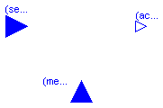
| Name | Default | Description |
|---|---|---|
| nu_s | 1 | Number of setpoint inputs |
| nu_m | 1 | Number of measurement inputs |
| ny | 1 | Number of actuator outputs |
partial block MVcontrol "Multi-Variable continuous controller" extends BlockIcon; parameter Integer nu_s=1 "Number of setpoint inputs"; parameter Integer nu_m=1 "Number of measurement inputs"; parameter Integer ny=1 "Number of actuator outputs"; InPort inPort_s(final n=nu_s) "Connector of setpoint input signals"; InPort inPort_m(final n=nu_m) "Connector of measurement input signals"; OutPort outPort(final n=ny) "Connector of actuator output signals"; end MVcontrol;
partial block BooleanBlockIcon "Basic graphical layout of Boolean block" end BooleanBlockIcon;
Modelica.Blocks.Interfaces.BooleanSISO

partial block BooleanSISO "Single Input Single Output control block with signals of type Boolean" extends BooleanBlockIcon; public BooleanInPort inPort(final n=1) "Connector of Boolean input signal"; BooleanOutPort outPort(final n=1) "Connector of Boolean output signal"; output Boolean y; protected Boolean u=inPort.signal[1]; equation y = outPort.signal[1]; end BooleanSISO;

Block has a continuous input and a continuous output signal vector where the signal sizes of the input and output vector are identical and of type boolean.
| Name | Default | Description |
|---|---|---|
| n | 1 | Number of inputs (= number of outputs) |
partial block BooleanMIMOs "Multiple Input Multiple Output continuous control block with same number of inputs and outputs of boolean type" extends BooleanBlockIcon; parameter Integer n=1 "Number of inputs (= number of outputs)"; BooleanInPort inPort(final n=n) "Connector of Boolean input signals"; BooleanOutPort outPort(final n=n) "Connector of Boolean output signals"; output Boolean y[n] "Output signals"; protected Boolean u[:]=inPort.signal "Input signals"; equation y = outPort.signal; end BooleanMIMOs;
Modelica.Blocks.Interfaces.MI2BooleanMOs

Block has two Boolean input vectors u1 and u2 and one Boolean output vector y. All vectors have the same number of elements.
| Name | Default | Description |
|---|---|---|
| n | 1 | Dimension of input and output vectors. |
partial block MI2BooleanMOs "2 Multiple Input / Boolean Multiple Output block with same signal lengths" extends BooleanBlockIcon; parameter Integer n=1 "Dimension of input and output vectors."; InPort inPort1(final n=n) "Connector 1 of Boolean input signals"; InPort inPort2(final n=n) "Connector 2 of Boolean input signals"; BooleanOutPort outPort(final n=n) "Connector of Boolean output signals"; end MI2BooleanMOs;

| Name | Default | Description |
|---|---|---|
| nout | 1 | Number of Boolean outputs |
partial block BooleanSignalSource "Base class for Boolean signal sources" extends BooleanBlockIcon; parameter Integer nout(min=1) = 1 "Number of Boolean outputs"; BooleanOutPort outPort(final n=nout) "Connector of Boolean output signal"; end BooleanSignalSource;
partial block IntegerBlockIcon "Basic graphical layout of Integer block" end IntegerBlockIcon;

| Name | Default | Description |
|---|---|---|
| nout | 1 | Number of outputs |
partial block IntegerMO
"Multiple Integer Output continuous control block"
extends IntegerBlockIcon;
parameter Integer nout(min=1) = 1 "Number of outputs";
IntegerOutPort outPort(final n=nout) "Connector of Integer output signals"
;
output Integer y[nout];
equation
y = outPort.signal;
end IntegerMO;

| Name | Default | Description |
|---|---|---|
| nout | 1 | Number of outputs |
| offset[:] | {0} | offset of output signal |
| startTime[:] | {0} | output = offset for time < startTime [s] |
partial block IntegerSignalSource
"Base class for continuous Integer signal source"
extends IntegerMO;
parameter Integer offset[:]={0} "offset of output signal";
parameter SI.Time startTime[:]={0} "output = offset for time < startTime";
end IntegerSignalSource;

Block has a continuous integer input and a continuous boolean output signal vector where the signal sizes of the input and output vector are identical.
| Name | Default | Description |
|---|---|---|
| n | 1 | Number of inputs (= number of outputs) |
partial block IntegerMIBooleanMOs "Multiple Integer Input Multiple Boolean Output continuous control block with same number of inputs and outputs" extends BooleanBlockIcon; parameter Integer n=1 "Number of inputs (= number of outputs)"; IntegerInPort inPort(final n=n) "Connector of Integer input signals"; BooleanOutPort outPort(final n=n) "Connector of Boolean output signals"; output Boolean y[n] "Boolean output signals"; protected Integer u[n]=inPort.signal "Input signals"; equation y = outPort.signal; end IntegerMIBooleanMOs;